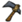

| Marble | |
| |
|
| Dropped by | (), |
| Stacks up to | 40 |
| DebugSpawn | "marble" |
Marble is a mineral resource. It is obtained by mining Marble Pillars, Marble Trees, Harp Statues, and Maxwell Statues with a Pickaxe or Pick/Axe, or by using the Touch Stone, which drops 2 Marble, 2 Rocks and 1 Nightmare Fuel upon its use. Marble is used to make Checkerboard Flooring and a Marble Suit.
Marble has the potential to fall during an earthquake, turning it into an unreliably renewable resource. It is the only mineral that Rock Lobsters, Slurtles, and Snurtles don't eat.
|  |
| ×12 |
 | ×4 |  |